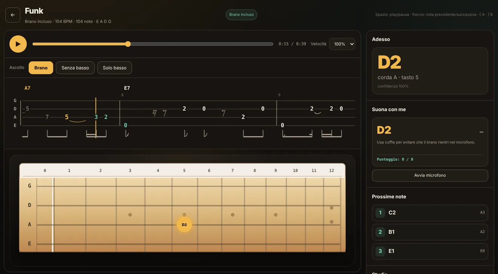
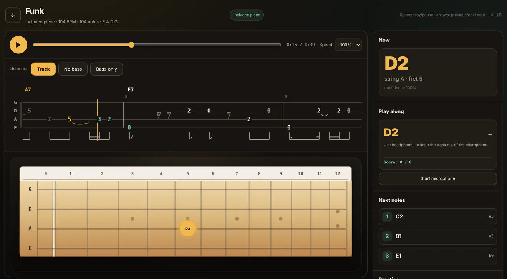

Nel browserIn the browser
Manico
Si apre e si usa, senza installare niente. Va bene per provare, per i brani di tutti i giorni e su qualsiasi computer.Open it and use it, with nothing to install. Good for trying things out, for everyday tracks and on any computer.
- Cinque brani inclusi per provare subitoFive pieces included to try straight away
- “Suona con me”: il microfono ascolta e ti dice se la nota è giusta e a tempo“Play along”: the microphone listens and tells you whether the note is right and in time
- I brani restano salvati nel browserYour tracks stay saved in the browser